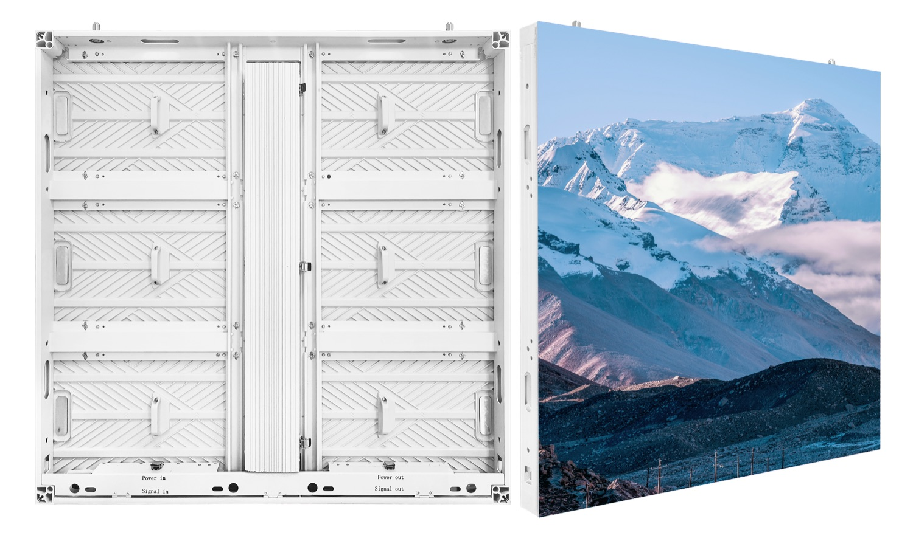
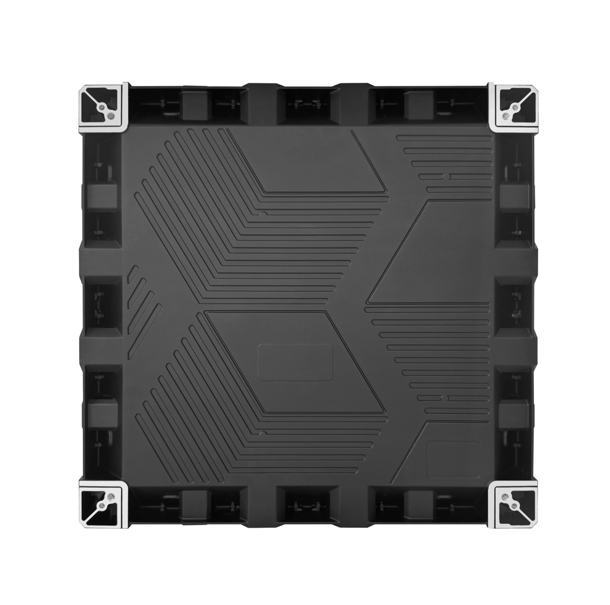
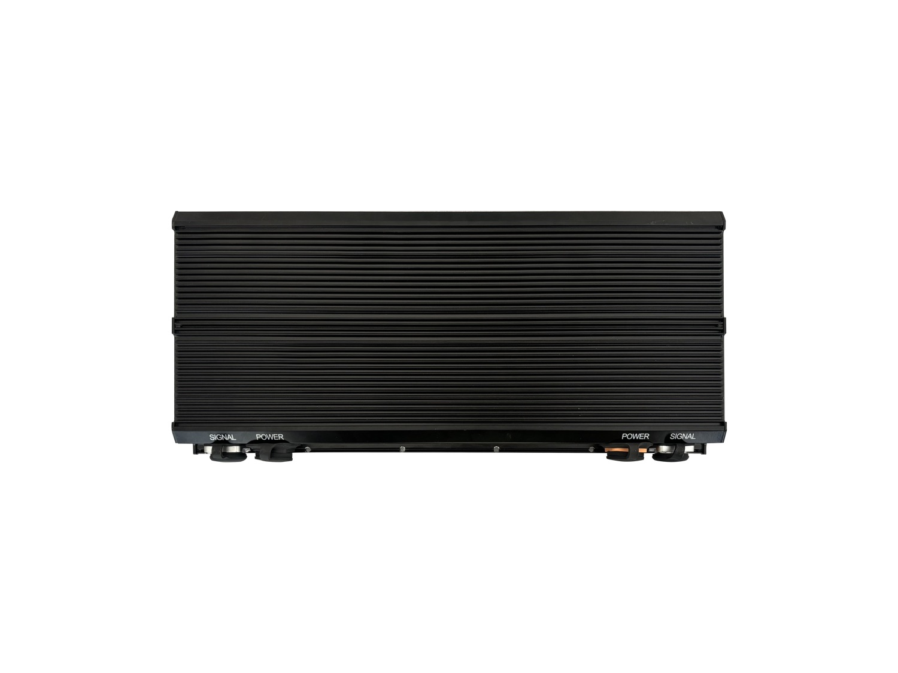

By David
If you are buying a dvLED wall as the end user — the IT director, facilities manager or procurement lead who owns the outcome — the decisions you make are different from the ones an integrator makes. You are not specifying cabinets and pixel pitch; you are defining what the wall has to do, what the building has to provide, and how the thing is going to be looked after for the next decade.
This guide is written for that side of the table. It covers what dvLED is in the terms a non-specialist needs, how to scope a project before anyone quotes it, what to ask an integrator, and where the cost actually sits over the life of the wall.
A dvLED wall is a large display assembled on site from LED cabinets. Unlike an LCD video wall, which is an array of complete panels, a dvLED wall is built to the size of the space from repeated cabinets, so the finished surface has no bezel lines running across it.
Three consequences follow for someone managing a building rather than installing equipment. The wall can be any size the space allows, rather than being limited to panel multiples. Its brightness is high enough for a daylit lobby, which is usually the reason dvLED is chosen over an LCD wall in the first place. And it is serviced module by module, which matters for how the room is used during a repair.
Most dvLED projects go wrong at the scoping stage rather than the technical stage, because a quotation is only as good as the brief it answers.
Five things need deciding before you approach an integrator. The room and the viewing distance, from the nearest desk or seat to the farthest. What will be shown — live data, video conference, imagery, or a mix, since the content drives the specification more than the room does. How long it needs to run each day, because a wall in continuous operation carries different requirements from one used for meetings. Who will look after it, and whether the building has technical staff or will rely on a service contract. And the budget envelope, including installation and the service arrangement rather than the equipment alone.
| Decision | Why it drives the specification |
|---|---|
| Nearest and farthest viewing distance | Sets the pixel pitch, and therefore most of the cost |
| Content type | Text and data need finer pitch than video or imagery |
| Daily operating hours | Continuous use changes power, cooling and service requirement |
| Who maintains it | Decides whether spares are held locally and how fast a repair has to be |
| Budget including installation | Equipment is only part of the delivered cost |
A dvLED wall is a building change as well as an AV purchase, and the items below are the ones that cause delay when they are discovered late.
The wall needs a structure that can carry the cabinet weight plus the mounting. It needs a power supply sized for the average and maximum load of the screen, not an estimate. It needs to be reachable for service, preferably from the front so a module can be changed without scaffolding. And where the installation falls under a building code, it needs the certification the code requires, which is checked at approval rather than at installation.

The questions that separate a considered proposal from a price are mostly about the things that do not appear on the quotation.
Ask what the response time would be if a module failed, and where the spare parts would be held. Ask what the wall will look like in five years, given that LED output declines, and whether the brightness figure quoted has headroom over the light level measured in the room. Ask who witnesses the acceptance test and what the pass criteria are. And ask what the delivered cost is to your building, on a named delivery term, because the installation and freight are frequently absent from an equipment quotation.
A supplier who can answer those without going away to check is worth the difference in price. One who cannot is a schedule risk.

The purchase price is the smallest of the three costs most owners carry.
Energy is the second. A wall running continuously draws power for its whole life, and the average power figure rather than the maximum is the one that predicts the bill. Spares and service are the third, and they are decided at the specification stage by whether modules are reachable from the front and whether parts are held locally.
That is why a slightly higher equipment price for a wall that is easier to service and runs cooler is frequently the cheaper decision over a ten-year installation.
Where the integrator sources the wall from a manufacturer, two documents decide how the project runs.
The cut sheet fixes the specification: pitch, brightness, cabinet size, power, certifications. It is the document your integrator submits for approval and the one the delivered product is checked against. The certification file is what allows the installation to pass inspection where a building code applies.
Ask for both early. A project that discovers late that a chosen material lacks a required rating is a project that reopens decisions at the worst moment.
Our factory runs 8 IC production lines and 7 LED SMT production lines under ISO 9001:2015, with CE, FCC and RoHS certification, a 15 to 20 working day lead time and a three-year warranty.
For this requirement our range covers it directly: the All 12 LED display series the X Series all-platform.
Send your specifications for a detailed LED display price quote with UL/ETL certification.
Request Price Quote Chat on WhatsApp